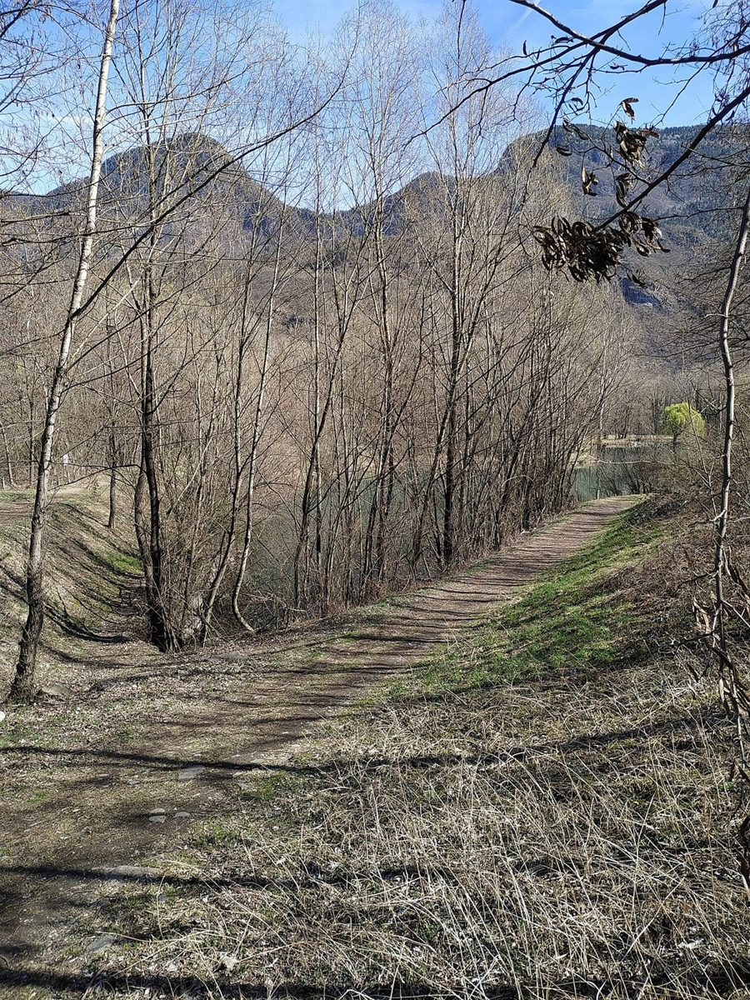

cafeたんぽぽ
カフェ・パン / 岩手県一関市台町
岩手県一関市にある「cafeたんぽぽ」のご案内ページです。営業時間やメニューなど、詳しいことは準備中。まずはInstagramをのぞいてみてください。

制作側の連想
綿毛の着地点
このページのテーマ「綿毛の着地点」は、制作側が屋号と業種、土地から連想したもので、お店の理念や名前の由来とは無関係です(由来は分かりません)。「たんぽぽ」から綿毛が風に乗って飛ぶ様子を、カフェ・パンというお店の業種(詳しい提供内容は未確認)と、岩手県南の野の広がりに重ねて、「綿毛がどこに降りるか」をたどる作りにしました。
綿毛の飛んだ先
五つの着地点(イメージ)
写真は一関市のものではありません。場面のイメージで選んだ、国外・撮影地不明のフリー素材です。お店で提供しているものを示すものでもありません。
- ひとつめ

国外のイメージ(イタリア) 野の道
風に乗った綿毛がまず降りるのは、まだ春の浅い野道のような場所かもしれません。
- ふたつめ
国外のイメージ(イタリア) 麦の空
草むらを越えると、空の広い麦畑。綿毛は穂の間をすり抜けていきます。
- みっつめ

撮影地不明のイメージ 焼き色
ふわりと入った先で、こんがり色づいたものが目に入る。そんな場面を想像しました。
- よっつめ

撮影地不明のイメージ 一杯のあいだ
湯気の向こうで、綿毛はいったん羽をたたむ。ひと息つく時間です。
- いつつめ

撮影地不明のイメージ かごの中
最後は小さな丸いものが並ぶかごのそば。ここで根を下ろす、というお話にしてみました。
ご案内
お店のこと(確認できたものだけ)
| 所在地 | 〒021-0873 岩手県一関市台町7-15 |
|---|---|
| 電話 | なし |
| 営業時間 | 準備中 |
| 定休日 | 準備中 |
| ご予約 | 準備中 |
| 駐車場 | 準備中 |
| SNS | Instagram @cafe_tanpopo0306 |